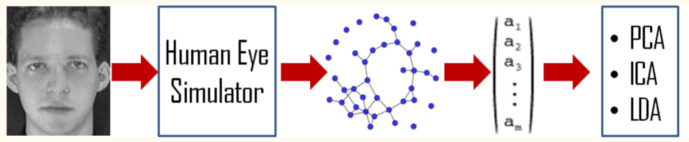
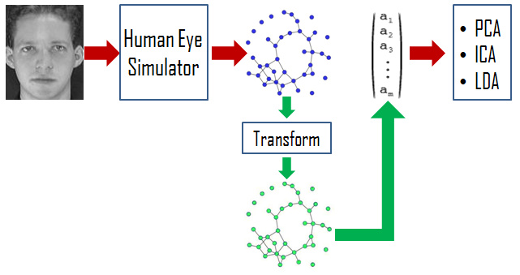
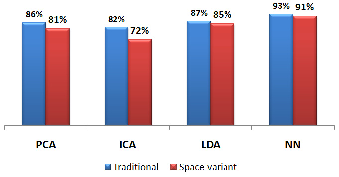
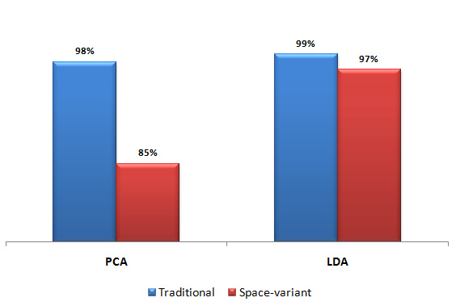

Human Visual System (HVS) has evolved exceptionally well when it comes to the task of face recognition.
In order to develop artificial vision systems with human-like ability of face recognition, a lot of
research has been done since the last 2 decades at the intersection of machine learning and image
processing. However, although the goal has been to match human like performance for face
recognition tasks, the approaches followed have been quite disparate.Traditional face
recognition algorithms assume the existence of an N x M rectangular image and the presence of a
Cartesian grid defining the image structure. In such architectures, resolution (density of pixels per unit area)
is uniform across the image. On the other hand, most biological vision systems deploy a space
variant sampling with a higher concentration of photoreceptors in the fovea while diminishing
concentration towards the periphery. This allows such systems to work with significantly lower
bandwidth while still maintaining a high acuity of the visual scene at the fovea.
Inspired by human visual system, in this paper, we adopt a biologically plausible approach towards the problem of
face-recognition system and, to that end, propose and implement algorithms for such tasks.
Results obtained using 2 popular face databases show that space variant sensors, even when
applied in a straight-forward manner, do not lag traditional image processing algorithms by a big
margin for the task of face recognition.
Introduction
In recent years, with the emergence of fields such as surveillance, biometrics and tracking systems, face recognition technology has received significant attention. Given the complexity of the problem, a lot of approaches have been proposed in the literature which take different routes to address it \cite{ramkumar2013face}. At the same time, the tremendous visual processing capability of humans has fascinated both biologists and computer scientists.
Robust computational models of face recognition are interesting not only because they contribute to theoretical insights but also to practical computer applications such as film processing, human-computer interaction, criminal tracking and security systems. Human visual system has evolved exceptionally well to detect faces even in complex settings. For example, even under different illumination conditions, different poses, different expressions and at different scales, humans can easily both detect as well recognize faces of many individuals. On the other hand, even the most complex algorithms such as deep neural networks have failed to provide human like accuracy. As such, it is totally reasonable to adopt a biologically inspired vision system which is far less complex and at the same time more robust when it comes to the task of face recognition.
Traditionally, images have been represented as an N x M grid of pixels. Such representations assume the presence of a Cartesian grid and thus defining pixel neighborhood is easy. Also, the density of pixels in uniform across the image. On the other hand, images formed in our retina are quite different. The density of photo-receptors is the highest at the fovea located at the center of the retina and decreases gradually towards the periphery. This gives humans the ability to focus at things which are important, while also maintaining a relatively blurred view of the surrounding. Active vision models can hugely benefit from such models since a broader view can be maintained while processing at a significantly lower bandwidth.
In this paper, we adapt traditional face recognition algorithms to a space-variant setting. Specifically, we modify 3 well known approaches - PCA, ICA and LDA and show how space variant models can utilize these techniques for face recognition. Since neural network based models have recently outperformed all earlier approaches, we also show a neural network based based on space variant images for face recognition.
Methodology
In this approach, we consider representing pixels as nodes of a graph where edges can be used to establish neighborhood relationships between pixels. Such a graph has high density of nodes at the center representing the fovea and decreasing number of nodes towards the periphery. Given an N x M image, we transform it to a graphical structure using the toolbox provided by Leo Grady. Specifically, we specify the retinal structure of the eye and the image and get a set of nodes and edge relationships. The value stored at these nodes represent the luminance values of transformed pixels. The nodes of this graph can then be used by conventional algorithms such as PCA, LDA, ICA for further processing.

Fig 1. - Adaptation of traditional algorithms to a space-variant setting.
According to the Lambertian reflectance model, an image can be decomposed as a product of reflectance and luminance matrices. In our case, while luminance captures the properties of a face,reflectance captures information about surrounding light. Since we are interested in recognizing faces, we need to work only with theluminance matrix. Wang et al. Wang et al. introduced the concept of Self Quotient Image for addressing the issue of illumination invariance using only a single face image. They represent the luminance matrix as a quotient image obtained by ratio of the original image and its smoothened version. The smoothened version of an image is obtained using Gaussian filtering. It is easy to define Gaussian filtering in a traditional N x M rectangular image since neighborhood relationships are well defined. For the graphical structure we adopt, we use nodes connected via edges as neighboring nodes and perform Gaussian weighted filtering to simulate the generation of luminance matrix. Once we have the luminance image (quotient image), we can use this directly in all models discussed above.

Fig 2. - Description of an illumination-invariant model for the graphical model used.
Results
We distributed the ORL dataset into training and testing dataset with a 50:50 ratio, as suggested in the literature. For classification, we use the nearest neighbor approach by calculating Euclidean distance between vector representation of images. Then, we report the classification accuracy as a measure to evaluate performance of different algorithms. Figure 1 shows the classification accuracy obtained using each of the 4 algorithms - PCA, ICA, LDA and Neural Network both for traditional algorithms and space-variant algorithms. It can be seen that although each of the 4 algorithms perform poorly than their traditional counterpart, yet the difference isn't high. Among all of them, neural network based model performs the best with an accuracy of 91%.
Figure 2 shows the performance on Yale B database when we use the illumination invariance tool proposed in the above section. The database is divided into 10:90 train-test ratio, as suggested in the literature. Since PCA and LDA performed much better than ICA, we decided to test the performance of only PCA and LDA. After calculating classification accuracy, we observe that LDA performs much better than PCA and space-variant counterpart for LDA performs almost the same as its traditional counterpart.

Fig 3. - Accuracy obtained on the ORL database (Also
known as "The Database of Faces")

Fig 4. - Accuracy obtained on the Cropped Yale B database post pre-processing using illumination-invariant tool